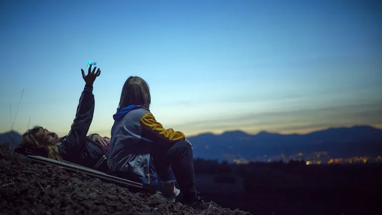
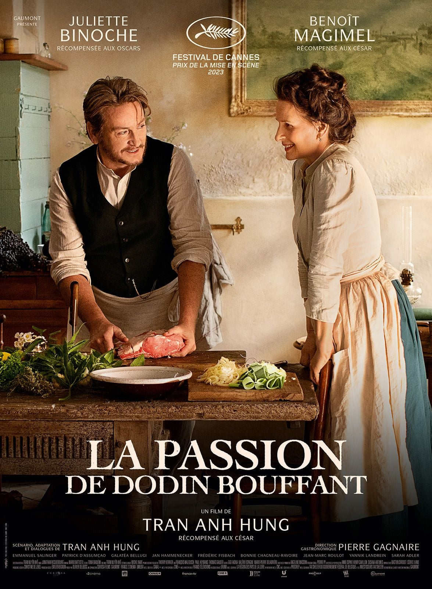
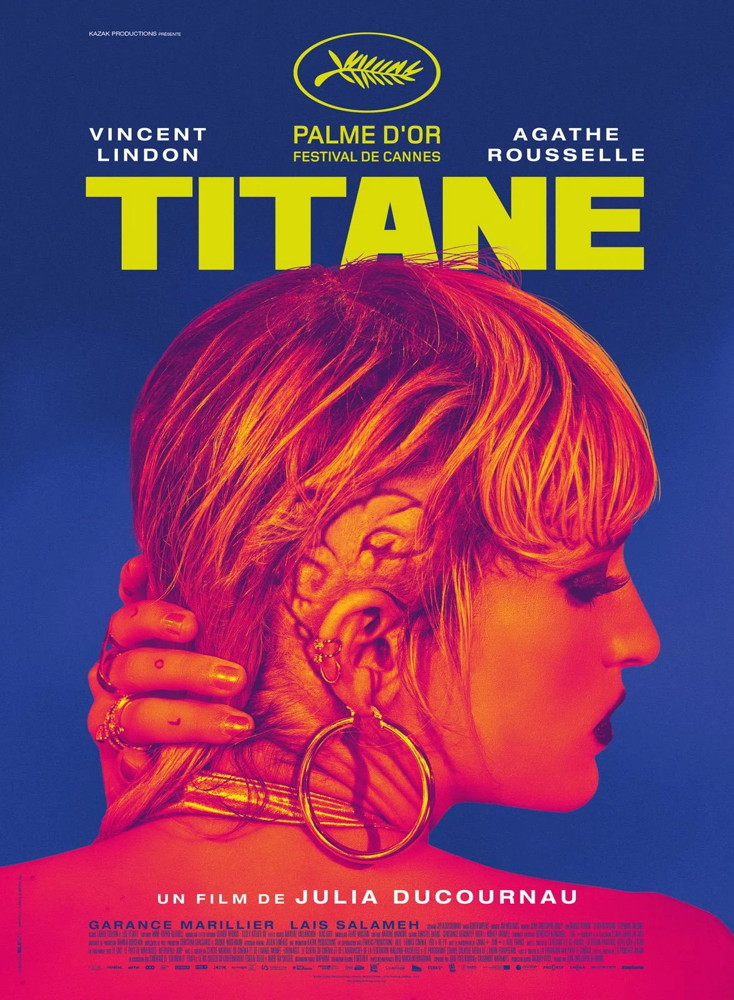
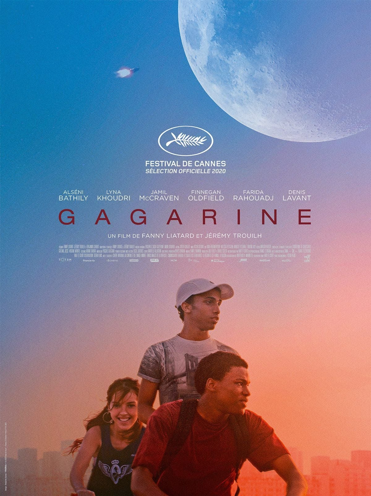
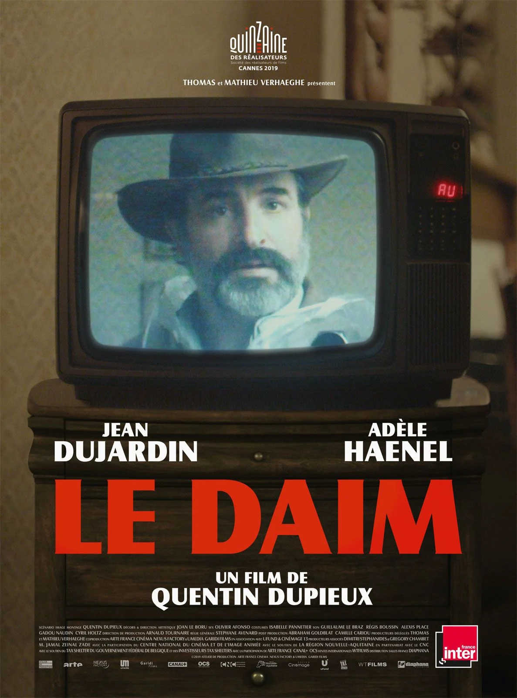
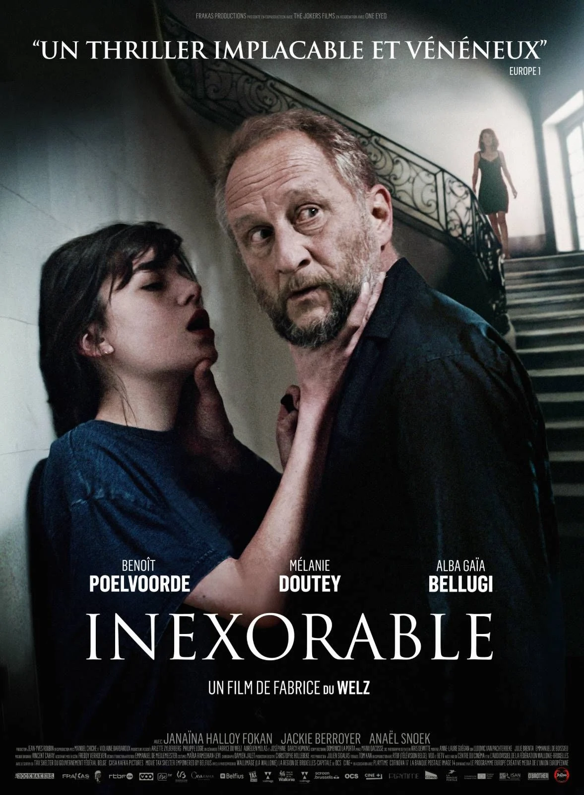
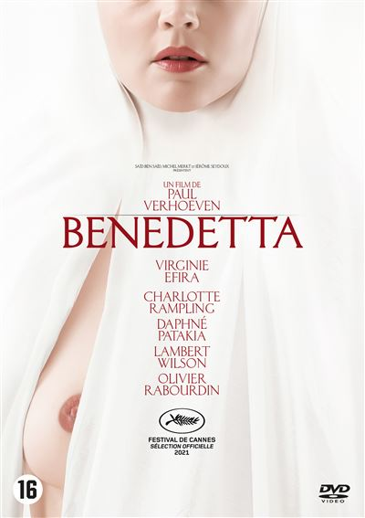
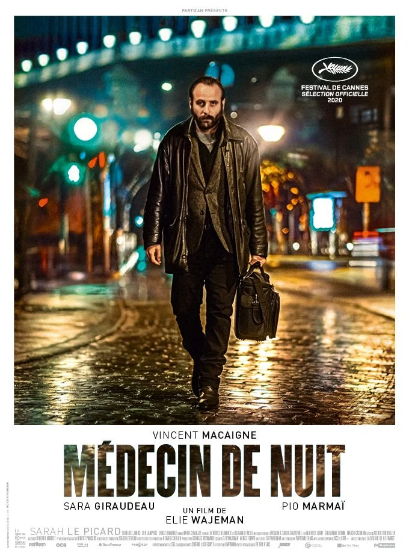
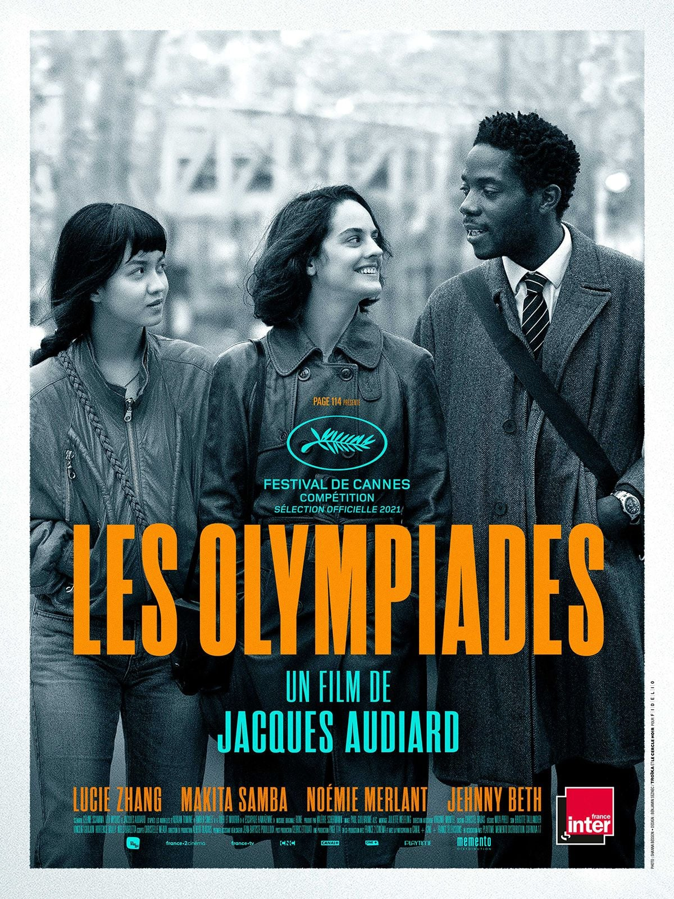
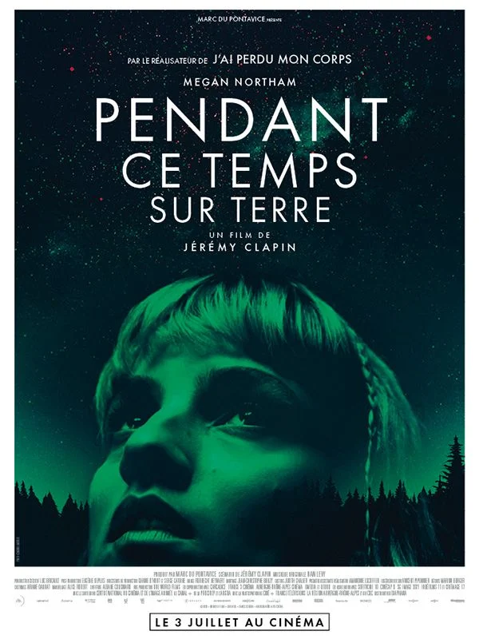

Non, il n'y a pas que la comédie en France.
Dans l'imaginaire collectif du grand public, le cinéma français traîne une réputation qu'il ne mérite pas, coincé entre la comédie familiale du dimanche soir et le drame social qui parle beaucoup et mis en scène comme Plus belle la vie.
Entre les deux, il y a pourtant tout un pan de production qui ose le body horror, la science-fiction intimiste, le polar nocturne ou la fable érotique en costume, sans jamais perdre ce goût très français du texte et du regard.
Voici neuf films qui méritent d'être vus, connus, défendus, et qui prouvent que le cinéma hexagonal sait aussi surprendre quand on lui laisse le temps. Petite précision avant de commencer : cette sélection triche un peu sur l'étiquette « français ». Fabrice du Welz est belge, Verhoeven est néerlandais et tourne ici en français comme si de rien n'était. Le cinéma francophone se moque un peu des frontières, et cette liste aussi. Voici neuf films qui méritent d'être vus, connus, défendus, et qui prouvent que le cinéma hexagonal et alentour, sait aussi surprendre quand on lui laisse le temps.
Tran Anh Hung filme la cuisine du XIXe siècle comme d'autres filment des scènes d'amour, en plans séquences qui prennent le temps de regarder mijoter un bouillon. Le prix de la mise en scène à Cannes n'a rien d'un hasard.
Juliette Binoche et Benoit Magimel y sont pour beaucoup, mais c'est surtout la patience du film qui marque, dans une époque où tout va vite. Rarement un film aura donné autant faim.

Une femme couche avec une voiture, tue beaucoup de monde, puis se fait passer pour un fils disparu depuis vingt ans. Résumé ainsi, ça ne rend pas justice à la Palme d'or. Julia Ducournau filme les corps qui débordent comme personne en France.
Sous le chaos apparent se cache un film sur la paternité et la métamorphose, porté par une Agathe Rousselle habitée du début à la fin.

Youri a seize ans, vit dans une cité promise à la démolition, et rêve de devenir cosmonaute. Le duo Liatard-Trouilh transforme sa tour d'Ivry en vaisseau spatial le temps d'un premier film. Le réalisme social y côtoie le merveilleux sans jamais forcer le trait.
Tourné avec d'anciens habitants du lieu, le film garde une tendresse rare pour ce qu'il filme, jusque dans sa destruction annoncée.

Un homme, joué par le fabuleux Jean Dujardin, achète une veste en daim et décide qu'il doit être le seul au monde à porter une veste. Le pitch est aussi simple que ça, et Dupieux n'a besoin de rien d'autre. Jean Dujardin n'a jamais été aussi drôle et inquiétant à la fois.
Le film dure à peine plus d'une heure et n'en a pas besoin de plus pour installer son absurdité méthodique jusqu'à un dernier acte totalement dérangé.

Un écrivain en manque d'inspiration s'installe avec sa famille dans la maison de son défunt éditeur, sans se douter qu'une jeune femme rôde déjà dans les parages depuis bien plus longtemps qu'eux. Fabrice du Welz construit un huis clos qui resserre son étau sans un geste de trop.
Benoît Poelvoorde y est glaçant dans un rôle à contre-emploi, porté par une mise en scène qui prend son temps pour mieux frapper.

Une nonne du XVIIe siècle prétend recevoir des visions du Christ, et tombe amoureuse d'une autre religieuse dans un couvent italien. Saint Paul Verhoeven adapte un fait réel sans en gommer une once de provocation. Virginie Efira y est totale, entre mysticisme et désir assumé.
Un film qui fera monter la chaleur dans les maison.

Mikaël soigne les toxicomanes que personne d'autre ne veut voir, et couvre en parallèle le trafic d'ordonnances de son cousin pharmacien. Une nuit, tout doit se régler. Vincent Macaigne trouve ici l'un de ses rôles les plus sombres.
Wajeman filme un Paris nocturne et populaire rarement montré ainsi, quelque part entre le polar et le portrait social, sans jamais choisir entre les deux.

Audiard troque son cinéma viril habituel pour un noir et blanc élégant, et suit trois jeunes gens qui se cherchent, se ratent et se retrouvent dans le 13e arrondissement de Paris. Le film adapte les comics d'Adrian Tomine avec une fluidité surprenante.
Lucie Zhang, Makita Samba et Noémie Merlant portent un récit sur le sexe et la solitude contemporaine sans jamais tomber dans le cliché.

Elsa n'a jamais fait le deuil de son frère spationaute, disparu en mission trois ans plus tôt. Une entité venue de l'espace lui propose alors de le lui rendre, à un prix qu'elle découvrira trop tard. Clapin mélange prises de vue réelles et animation avec la même sensibilité que dans J'ai perdu mon corps.
Le film avance à hauteur d'Elsa, dans un deuil suspendu plus que dans le grand spectacle, et c'est précisément ce qui le rend si particulier.